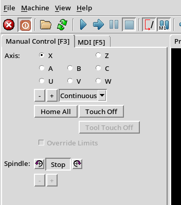

This screen allows the user to perform many functions.
Jog an individual axes
To do this,
- Select the axis to jog
- Ensure the selected axis is enabled
- Use the pull-down to select either Continuous movement or a select distance
- Use the - (minus) or + (plus) button to move the axis the selected distance.
Note: The Sp1 (Rosette Phaser Multiplier) axis cannot be operated from this screen. This is a limitation with the Axis display in LinuxCNC.
Home All Axes
This button is used to Home All axes.